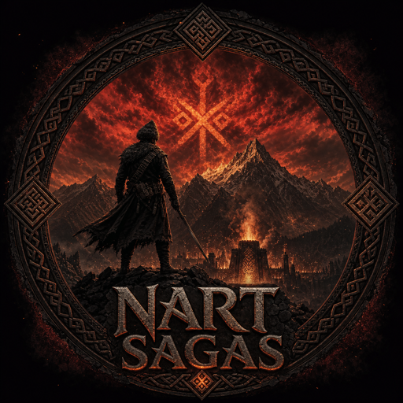

Projects
AWARE
Research on identifiable computational units (caps) for AI. Current paper: cap-augmented transformers achieve a 51% perplexity reduction over a matched-size baseline on TinyStories. Long-term direction: identifiable, self-evolving architectures.

Nart Sagas
A Diablo-style action RPG set in the world of the Circassian Nart sagas — kill, loot, level, and push back Yemynech the plague-bringer across the high Caucasus. In development with Godot 4.

limnx
The Limnx kernel - A small, hackable Unix-like OS for x86_64 and ARM64.

openvole
Micro-agent core. The smallest possible thing that other useful things can be built on top of. An open alternative to OpenClaw.